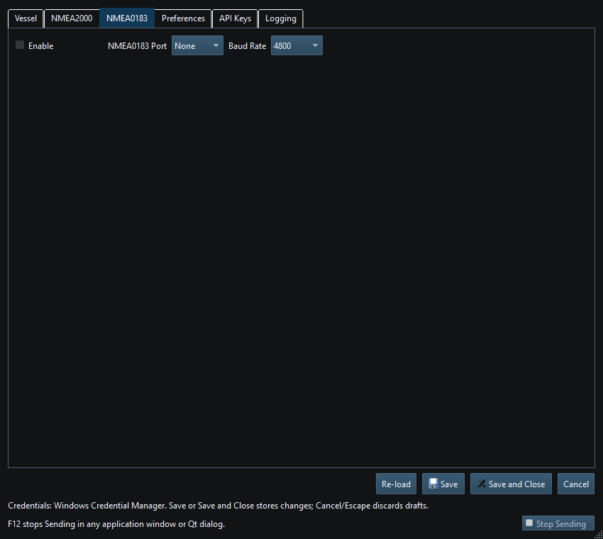
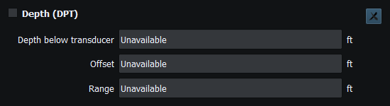
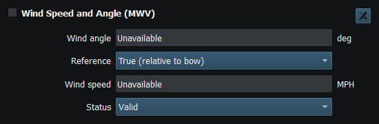
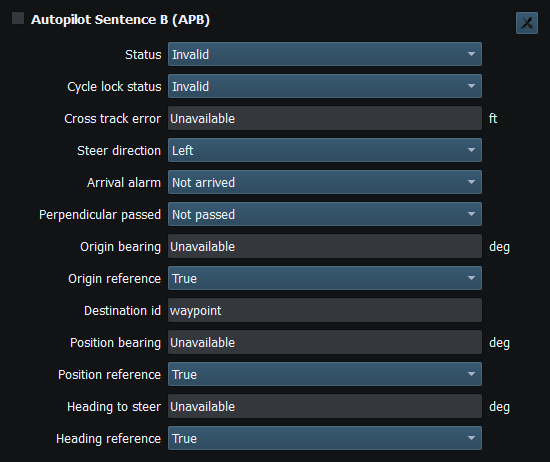
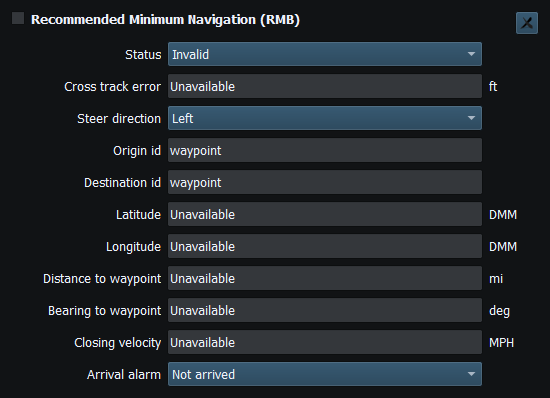

NMEA0183 is a sentence-oriented serial path. It is not selected by choosing a CAN adapter, and its sentence coverage must be checked independently of NMEA2000 PGNs.
Use the real device's specification for wiring/electrical levels and baud rate. A USB serial name alone does not prove that RS232, RS422/NMEA0183 or CAN wiring is compatible. Do not connect incompatible electrical interfaces based on the appearance of a port in Setup.
The sentence reference lists all 18 supported formatters and their RX/TX fields and limits. Choose the formatter needed by the receiver; NMEA2000 PGN support is a separate list.
Check port access and baud first, then sentence type, checksum/framing, supported fields and receiver expectations. A valid unavailable date/time should not become a plausible invented date. Logical TX log entries describe submissions, not guaranteed delivery on the wire.

Figure 60. Enable NMEA0183 and select its serial port and baud rate in Setup. Click to enlarge.

Figure 61. Depth, offset and range in the DPT instrument. Click to enlarge.

Figure 62. Wind angle, reference, speed and status in the MWV instrument. Click to enlarge.

Figure 63. Autopilot bearings, steering direction and navigation status in the APB instrument. Click to enlarge.

Figure 64. Destination waypoint and approach information in the RMB instrument. Click to enlarge.
NMEA2000 Overview · Network NMEA2000 · SocketCAN · CANable SLCAN · Waveshare USB-CAN-A · Actisense NGT-1 · Signal K · Device Discovery and Diagnostics · Connection Troubleshooting · Enable, Dispatch and Sending · Route Overview · Engineering Units